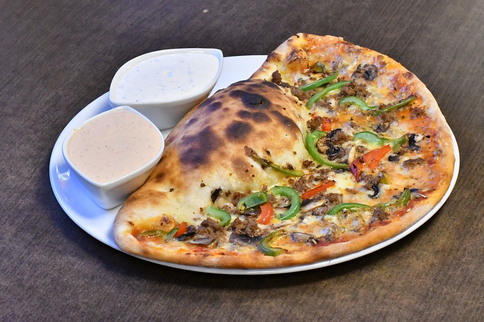

Pizza Calzone

A calzone is an Italian oven-baked folded pizza, often described as a turnover, made with leavened dough. It originated in Naples in the 18th century.
Absolutely everything is good in a calzone.
Ingredients
- Cooking spray
- 350g pizza dough
- plain flour, for surface
- 225 g pizza sauce
- 250 g ricotta
- 75 g pepperoni
- 100 g grated mozzarella
- Extra-virgin olive oil, for brushing
- salt
Steps
- Preheat oven to 260ºC (240ºC fan) and grease two large baking trays with cooking spray. Divide pizza dough into 4 pieces. On a lightly floured surface, roll one piece of dough out into a 20 cm (8") circle, about half a centimetre (¼") thick. Spoon pizza sauce in middle of dough, then dot with ricotta and top with pepperoni and mozzarella.
- Gently fold dough in half, dampen seams with water and pinch together, then crimp edges all around. Repeat with remaining dough. Transfer to prepared baking trays. Brush tops with oil and sprinkle with salt. Using kitchen scissors or a sharp knife, slit tops in 2 to 3 spots to create steam vents.
- Bake until tops are golden and filling is bubbling, 20 minutes, brushing with more oil halfway through. Let cool 5 minutes before cutting open.